Immigrants make up about 18% of the U.S. labor force and participate at higher rates than native-born workers, yet earn less at every education level. The gap is not simply a skills mismatch. Foreign credentials go unrecognized, networks take time to build, and English proficiency shapes earnings more strongly than almost any other single variable. This paper works through four layers of the question: who immigrants are in the labor market and where they work, how the wage discount compares across education and occupation, how earnings close toward native levels over years since arrival, and how much of the gap is already gone by the second generation. Country of origin turns out to matter as much as years in the country.
The 47 million foreign-born residents in the United States account for roughly 18% of the civilian labor force, a share that has grown steadily since the 1970s and stabilized in the 2010s. What stands out first is labor force participation. In 2023, 65.9% of foreign-born adults participated in the labor force against 62.4% for native-born adults. That 3.5 percentage point gap is driven almost entirely by men: foreign-born men participate at 77.2% compared to 68.5% for native-born men, one of the largest nativity gaps in the data. Among women the pattern flips: native-born women (56.8%) participate slightly more than foreign-born women (55.2%), partly because many immigrant women arrive as spouses and transition into the workforce later. Unemployment rates are essentially identical, 3.6% for foreign-born versus 3.7% for native-born in 2023.
The occupational picture is bimodal. Foreign-born workers are less represented in management and professional roles (33.0% vs 40.8% for native-born) but more concentrated in service occupations (24.5% vs 17.9%), construction and extraction (11.3% vs 7.4%), and production and transportation (13.2% vs 10.3%). Agriculture is the most extreme case: only 0.4% of native-born workers are in farming or agricultural occupations, against 2.2% of foreign-born workers. Industry concentration data (Fig 5) shows that food service, residential construction, personal care, and agricultural processing all carry foreign-born shares well above the 18% workforce average.
The education distribution is the most distinctive feature of the immigrant workforce. It is sharply bimodal in a way that the native-born distribution is not. Among foreign-born adults, 24.2% have less than a high school diploma, versus just 5.4% of native-born adults. At the same time, the shares holding a bachelor's degree (22.5% vs 24.6%) and an advanced degree (14.4% vs 14.1%) are nearly identical to native-born levels. The immigrant workforce is, in other words, simultaneously overrepresented at the lowest and competitive at the highest education levels, with a hollowed-out middle compared to native workers.
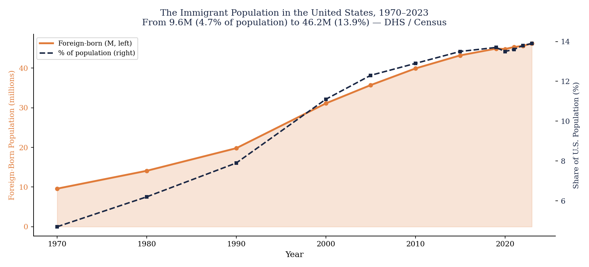
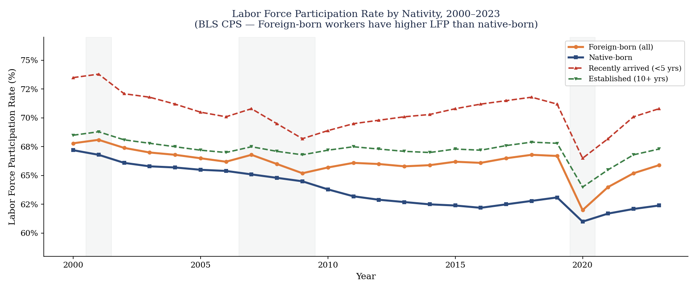
| Group | LFP Rate | Employment Rate | Unemployment Rate |
|---|---|---|---|
| Foreign-Born Total | 65.9% | 63.5% | 3.6% |
| Native-Born Total | 62.4% | 60.1% | 3.7% |
| Foreign-Born Men | 77.2% | 74.2% | 3.9% |
| Native-Born Men | 68.5% | 65.9% | 3.8% |
| Foreign-Born Women | 55.2% | 53.5% | 3.0% |
| Native-Born Women | 56.8% | 55.0% | 3.2% |
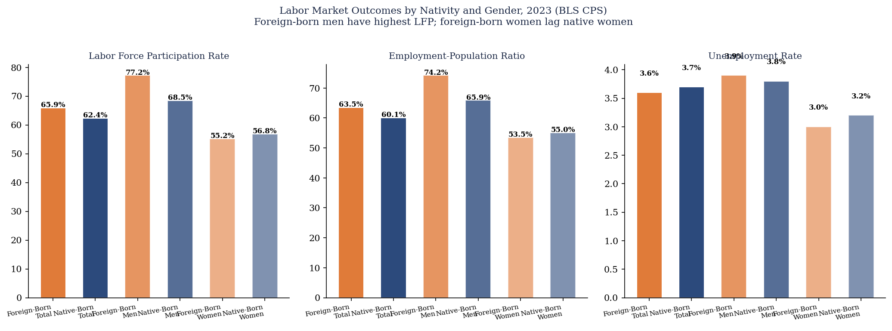
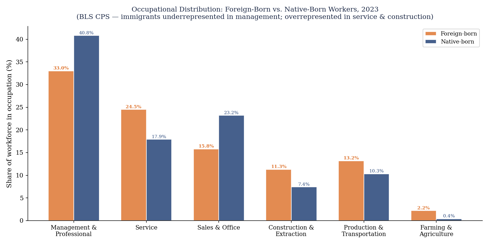
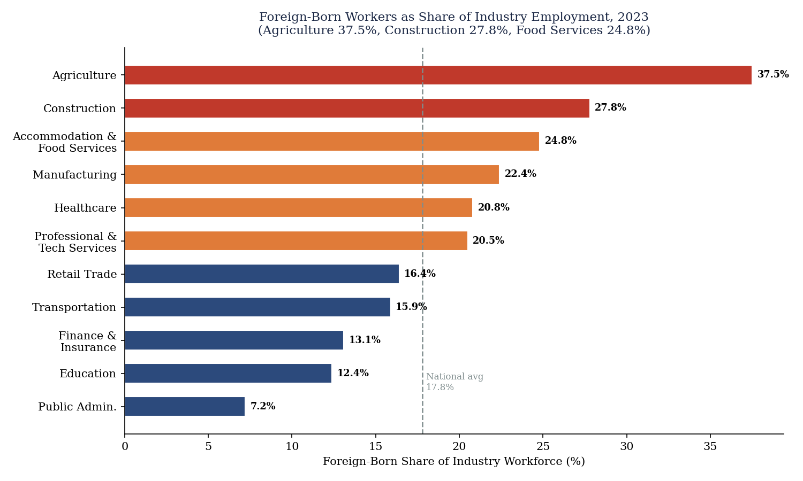
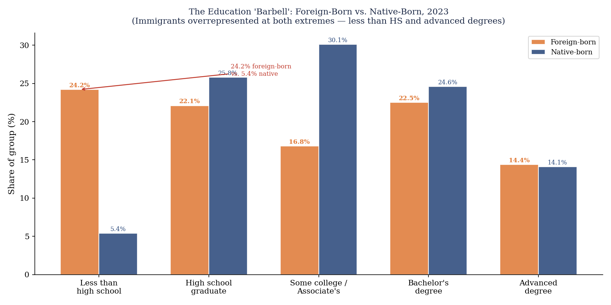
| Occupation | Foreign-Born Share | Native-Born Share |
|---|---|---|
| Management and Professional | 33.0% | 40.8% |
| Service | 24.5% | 17.9% |
| Sales and Office | 15.8% | 23.2% |
| Construction and Extraction | 11.3% | 7.4% |
| Production and Transportation | 13.2% | 10.3% |
| Farming and Agriculture | 2.2% | 0.4% |
Foreign-born men participate in the labor force at 77.2%, nearly nine points above the native-born male rate. The immigrant education distribution is bimodal in a way the native-born distribution is not: 24.2% hold less than a high school diploma (vs. 5.4% native-born), while bachelor's and advanced degree shares are nearly identical between the two groups.
Foreign-born workers earn less than native-born workers at every education level, and the gap widens as credentials increase. Among workers with less than a high school diploma, the foreign-born earn $28,400 annually against $31,200 for native-born workers, a discount of about 9%. At the high school and some-college levels the discount holds near 10-11%. At the bachelor's level it reaches 10.9% ($68,500 vs $76,900). At the advanced degree level it is the largest: 12.7% ($92,400 vs $105,800). A foreign-born worker with a master's or doctorate earns less than a native-born worker with the same credential, and the gap is bigger than it is for workers without any degree.
The education discount mechanism matters here. Three things drive it. First, foreign degrees are not always recognized or valued equivalently by U.S. employers, particularly in licensed professions. Second, immigrants with graduate degrees arrived in the U.S. job market without established professional networks, references, and sector-specific experience. Third, the English proficiency gradient runs through every stratum: within the same education level, immigrants who speak English very well earn substantially more than those who speak it well, and those who don't speak it well earn substantially less. The discount is not purely a credential story.
Occupation-level wage data adds texture. In the high-concentration immigrant occupations at the low end, wages are low by any measure: personal care aides at $29,760, maids and housekeeping at $32,050, agricultural workers at $32,920. Foreign-born workers are 45% of the maid and housekeeping workforce and 51% of agricultural workers. At the high end, the distribution flips: software developers ($124,200 median) are 32.8% foreign-born, physicians ($229,300) are 28.4% foreign-born. Immigrant workers are heavily concentrated at both ends of the wage distribution, with native-born workers dominating the middle-skill sales, office, and management support roles where the foreign-born underrepresentation is greatest.
The self-employment rate (Fig 13) offers another dimension. Immigrant self-employment exceeds native-born rates in several sectors, particularly food service, personal care, and retail trade. This is partly necessity (the same discrimination and network barriers that depress wage earnings) and partly ethnic enclave entrepreneurship, where co-ethnic customer bases and co-ethnic supplier networks reduce the language and information barriers to starting a business.
Where $W_e$ is median annual earnings at education level $e$. The discount is computed within education cells to isolate the nativity penalty from the education premium.
| Education Level | Foreign-Born Annual | Native-Born Annual | Discount |
|---|---|---|---|
| Less than High School | $28,400 | $31,200 | 9.0% |
| High School Graduate | $38,200 | $42,800 | 10.7% |
| Some College / Associate's | $45,800 | $51,200 | 10.5% |
| Bachelor's Degree | $68,500 | $76,900 | 10.9% |
| Advanced Degree | $92,400 | $105,800 | 12.7% |
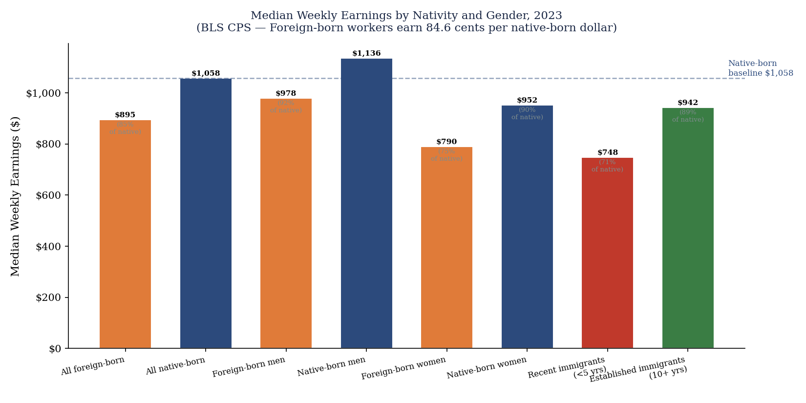
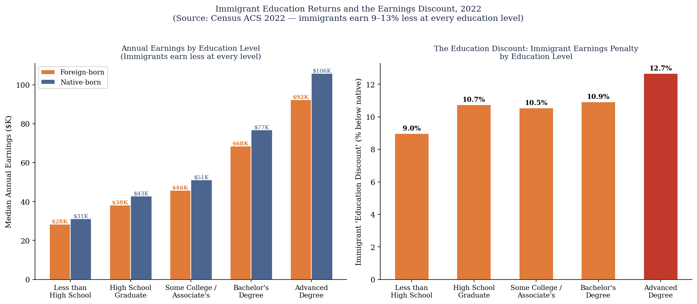
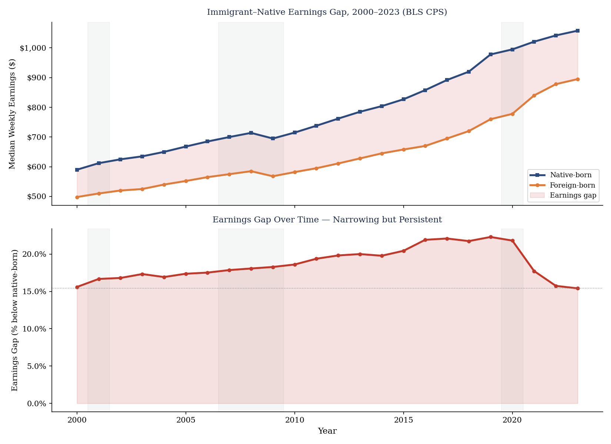
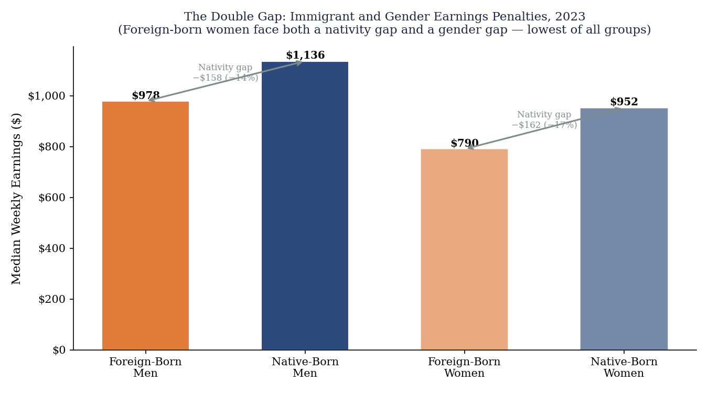
| Occupation | Foreign-Born Share | Median Annual Wage |
|---|---|---|
| Agricultural Workers | 51.3% | $32,920 |
| Maids and Housekeeping | 45.2% | $32,050 |
| Cooks | 42.1% | $34,580 |
| Construction Laborers | 38.5% | $40,770 |
| Taxi / Rideshare Drivers | 38.7% | $38,550 |
| Software Developers | 32.8% | $124,200 |
| Financial Analysts | 22.1% | $96,220 |
| Physicians | 28.4% | $229,300 |
| Registered Nurses | 18.2% | $81,220 |
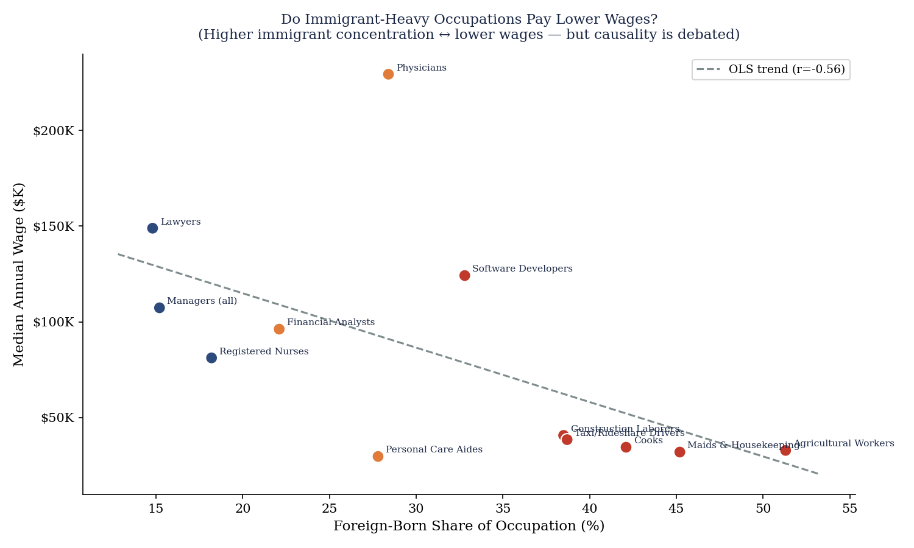
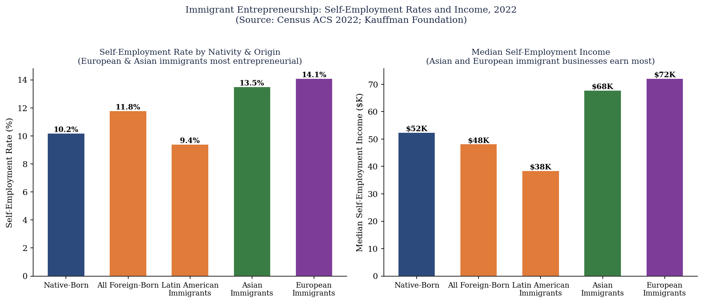
The earnings discount is largest at the advanced degree level, at 12.7%. A foreign-born worker with a graduate degree earns less relative to their native-born counterpart than a foreign-born worker without a high school diploma does relative to theirs. Unrecognized credentials, missing professional networks, and English proficiency all compound at the top of the education distribution.
Immigrant earnings are not static. They grow relative to native-born levels over years since arrival, following a trajectory that has been studied since Chiswick (1978) and refined by Borjas, Card, and more recently Abramitzky and Boustan. In the 2022 ACS synthetic cohort data, newly arrived immigrants earn about 68.2% of the native-born median. By years 6-10 they are at 81.2%. By years 16-20 they reach 88.4%. The trajectory flattens after about 20 years, with long-settled immigrants converging toward 92-93% of native earnings but not fully closing the gap. Full convergence does not happen within a single working lifetime for most immigrants.
The trajectory varies significantly by education. High-skilled immigrants (bachelor's and above) arrive at 78.4% of native median earnings and cross the native-born benchmark after roughly 30 years, reaching 100.5% in the 30+ year cohort. This means high-skilled immigrants do fully close the gap, and in later career years may slightly exceed it, likely because of selection effects among long-tenure immigrants. Low-skilled immigrants ( The origin-region data shows that gap closure speed varies as much by where you came from as by how long you've been here. European and Canadian immigrants arrive with the smallest initial gap (14.8% below native-born) and close 79% of it within 20 years. Asian immigrants arrive at 22.4% below and close 76.8% of it. Latin American immigrants arrive at 38.5% below and close only 61.6% of their initial gap over 20 years, leaving a remaining gap of 14.8%. Caribbean immigrants show the slowest closure, with 17.5% of the gap still open at 20 years despite arriving from a closer earnings baseline than Latin America. The generational data shows where the real convergence happens. First-generation immigrants earn a median of $40,800 annually. The 1.5 generation (those who arrived as children, before age 13) earn $52,400, a 28% jump from their parents who arrived as adults. Second-generation immigrants (U.S.-born with at least one immigrant parent) earn $65,200, within $3,300 of the third-plus generation native-born median of $68,500. College degree attainment follows the same arc: 29.8% for first generation, 38.5% for the 1.5 generation, and 47.2% for the second generation, which actually exceeds the third-plus generation rate of 38.1%. Most of the assimilation that economic models attribute to "years since arrival" is actually happening between generations.
Where $\text{YSA}$ is years since arrival, $\mathbf{X}$ is a vector of controls (education, origin country, age at arrival, English proficiency, metro area). The quadratic in YSA captures the concave earnings trajectory observed empirically.
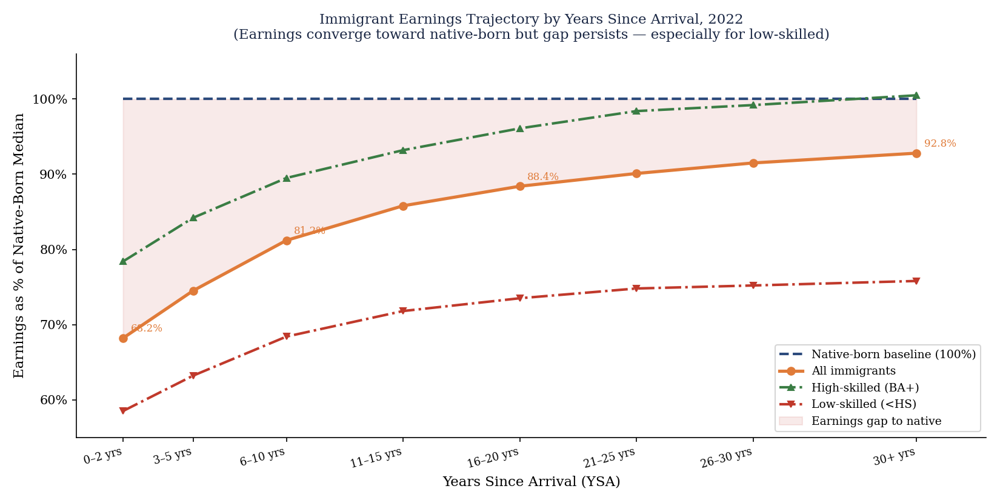
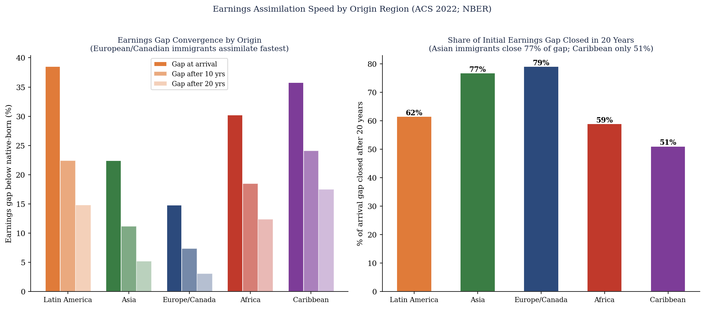
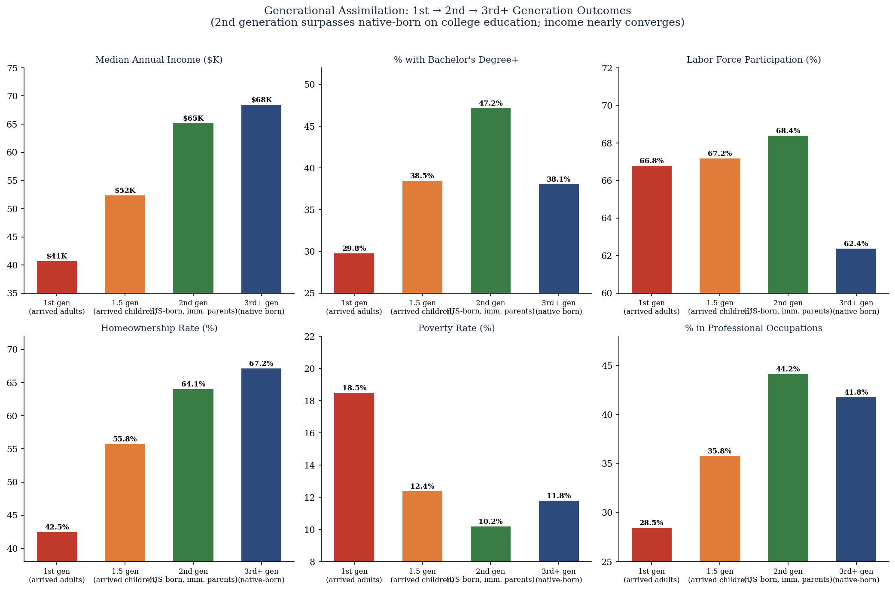
| Origin | Gap at Arrival | Gap at 10 Years | Gap at 20 Years | 20-Year Closure Rate |
|---|---|---|---|---|
| Europe / Canada | 14.8% | 7.4% | 3.1% | 79.1% |
| Asia | 22.4% | 11.2% | 5.2% | 76.8% |
| Africa | 30.2% | 18.5% | 12.4% | 58.9% |
| Latin America | 38.5% | 22.4% | 14.8% | 61.6% |
| Caribbean | 35.8% | 24.1% | 17.5% | 51.1% |
| Generation | Median Annual Income | College Degree Rate | LFP Rate | Homeownership | Poverty Rate |
|---|---|---|---|---|---|
| 1st Gen (arrived as adults) | $40,800 | 29.8% | 66.8% | 42.5% | 18.5% |
| 1.5 Gen (arrived as children) | $52,400 | 38.5% | 67.2% | 55.8% | 12.4% |
| 2nd Gen (U.S.-born, immigrant parents) | $65,200 | 47.2% | 68.4% | 64.1% | 10.2% |
| 3rd+ Gen (native-born) | $68,500 | 38.1% | 62.4% | 67.2% | 11.8% |
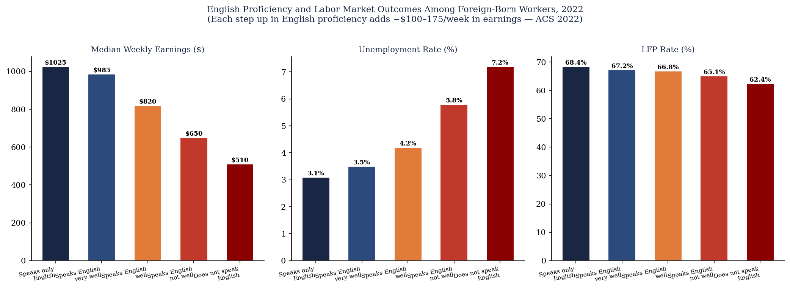
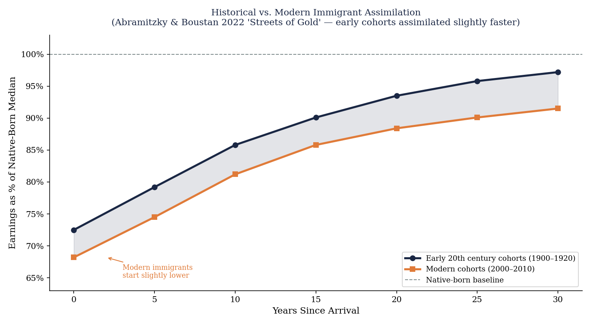
Most wage assimilation happens between generations, not over a single immigrant's career. Second-generation immigrants earn $65,200 annually and hold college degrees at a 47.2% rate, exceeding both their first-generation parents and the third-plus generation native-born benchmark. High-skilled immigrants are the only group that fully closes the earnings gap within their own working lifetime.
The country-of-origin data makes clear that "immigrant" is not a single labor market category. India and Mexico are both top-five sending countries, but their workforce profiles are almost opposites. Indian immigrants have a median annual earnings of $85,400, a 77.8% college attainment rate, a 78.4% English proficiency rate, and a 6.8% poverty rate. Mexican immigrants, the single largest foreign-born group at 10.6 million, have a median earnings of $32,500, an 8.1% college rate, a 38.5% English proficiency rate, and a 19.8% poverty rate. Both groups have labor force participation rates near 68%, which is above the native-born average. The difference is almost entirely in education and English proficiency, which feed directly into occupation and wages.
The composite assimilation index, built from earnings relative to native-born, education relative to native-born, English proficiency, poverty rate, and labor force participation, places Indian immigrants at 77.7, the United Kingdom at 79.7, Canada at 74.7, and Germany at 74.5 on a 0-100 scale. On the opposite end: Mexico scores 15.4, El Salvador 18.5, and Guatemala 18.9. Honduras sits at 20.1. The index isn't a measure of worth; it's a measure of structural integration into the mainstream labor market, and origin country predicts where you start more than almost any other factor.
English proficiency runs through everything. Among the foreign-born, 9.2% speak only English and 35.4% speak it very well. At the other end, 20.1% speak English not well and 10.5% do not speak it at all. The weekly earnings gradient from English fluency is steep: workers who speak only English earn about $1,025 per week; those who don't speak it earn $510, half as much. The unemployment gap across English proficiency levels (3.1% for English-only vs. 7.2% for no-English) is larger than the unemployment gap between any two racial or ethnic groups in the general population data.
Visa category data (Fig 21) puts the origin disparity in structural context. Employment-based visas (H-1B, EB categories) are disproportionately granted to workers from India, China, and the Philippines, all with high education requirements built into the visa itself. Family reunification visas, which make up the majority of legal permanent residency grants, have no education requirements and admit a much broader income and education distribution. The education and earnings gaps between sending countries partly reflect the selection built into the visa system, not just differences in home-country human capital.
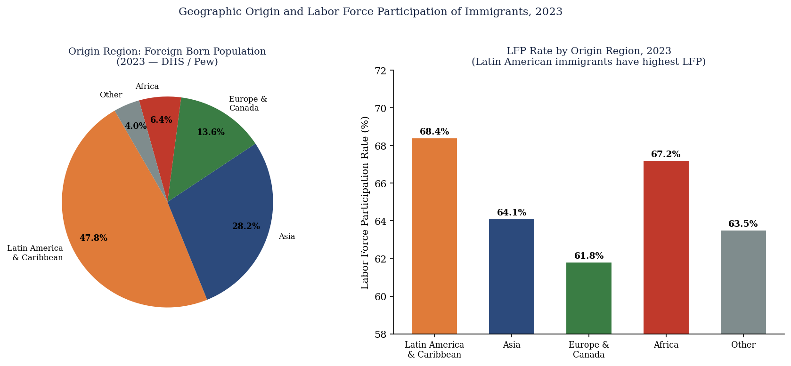
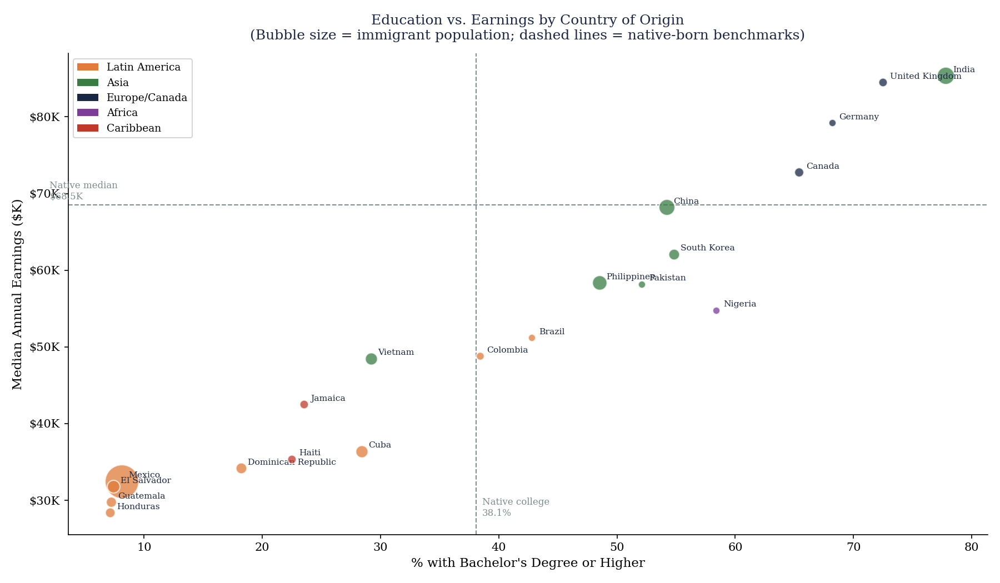
| Country | Pop. (M) | Median Earnings | % College | LFP Rate | % English Prof. | Poverty Rate |
|---|---|---|---|---|---|---|
| Mexico | 10.6 | $32,500 | 8.1% | 68.5% | 38.5% | 19.8% |
| India | 2.8 | $85,400 | 77.8% | 68.2% | 78.4% | 6.8% |
| China | 2.4 | $68,200 | 54.2% | 62.4% | 52.8% | 10.2% |
| Philippines | 2.0 | $58,400 | 48.5% | 62.8% | 72.4% | 8.4% |
| El Salvador | 1.5 | $31,800 | 7.4% | 72.4% | 34.2% | 21.4% |
| Vietnam | 1.4 | $48,500 | 29.2% | 66.8% | 58.5% | 12.5% |
| South Korea | 1.1 | $62,100 | 54.8% | 64.5% | 56.4% | 9.8% |
| Nigeria | 0.5 | $54,800 | 58.4% | 66.4% | 72.4% | 9.8% |
| Canada | 0.8 | $72,800 | 65.4% | 63.5% | 96.8% | 5.2% |
| United Kingdom | 0.7 | $84,500 | 72.5% | 64.2% | 98.5% | 5.8% |
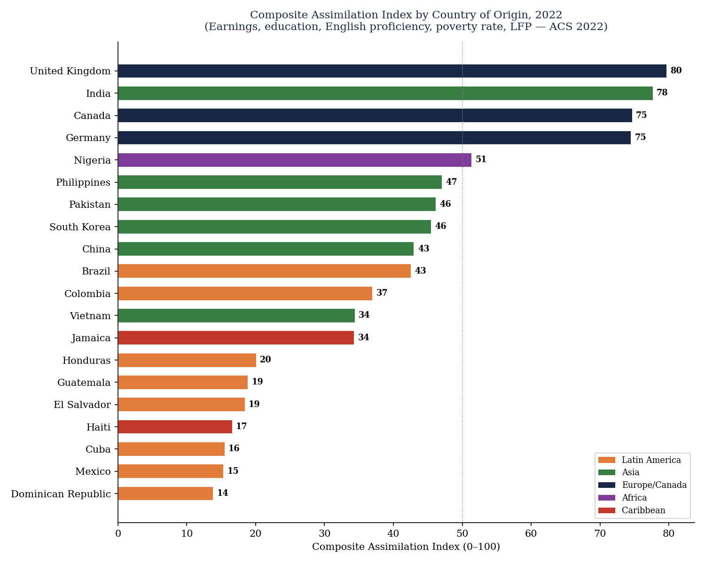
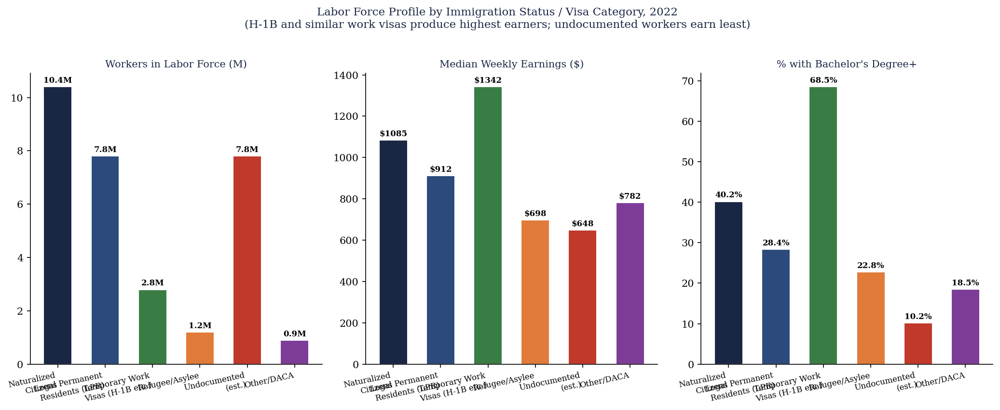
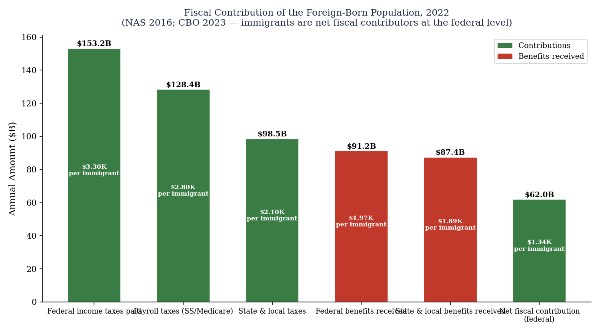
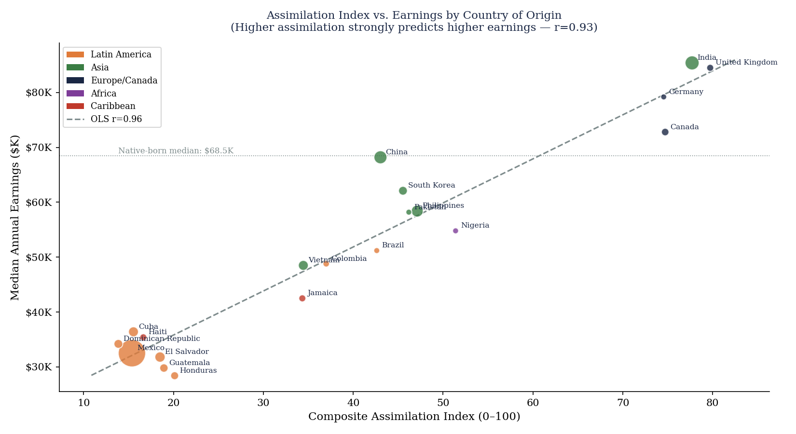
Country of origin is among the strongest predictors of labor market outcomes, often outweighing years since arrival. Indian immigrants score a composite assimilation index of 77.7 and hold college degrees at 77.8%; Mexican immigrants score 15.4 with an 8.1% college rate. Both groups have nearly identical labor force participation rates above the national average. The gap is not about willingness to work; it runs almost entirely through education, English proficiency, and the visa pathways that sort workers before they arrive.
Labor force participation and unemployment figures come from the BLS Current Population Survey (CPS), annual averages for 2023. Nativity is defined as foreign-born (born outside the U.S., Puerto Rico, or U.S. island territories) vs. native-born following BLS convention.
Occupational and earnings data come from the Census Bureau American Community Survey (ACS) 5-year estimates, 2018–2022, which provide sufficient sample sizes for country-of-origin breakdowns. Occupation codes follow the 2018 SOC classification system. Median annual earnings are for full-time, year-round workers aged 25-64 to control for age and work intensity differences.
Education discount estimates are computed within education level cells using ACS median earnings for full-time workers. The discount is the nativity earnings gap conditional on the same education credential, not a regression-adjusted estimate.
Assimilation trajectories use a synthetic cohort approach from ACS cross-sections, following workers by year-of-entry cohort across survey years. This approximates longitudinal tracking without panel data. The approach follows Borjas (1985, 1995) and Abramitzky, Boustan, and Eriksson (2014). Note that cohort selection effects mean that longer-tenure cohorts may reflect selective return migration (less successful immigrants leave), which would make the trajectory appear steeper than it is for any given arrival cohort.
The composite assimilation index is built from five components: earnings as a percent of native-born median, college attainment as a percent of native-born rate, English proficiency share, poverty rate (inverted), and LFP rate. Each component is min-max normalized across the 20 included countries and averaged equally. Country populations come from Pew Research Center estimates (2022).
Generational data follows Pew Research Center (2013, 2022) generational definitions. The 1.5 generation is defined as those who arrived before age 13. Second generation is U.S.-born with at least one foreign-born parent.
Limitations: The earnings discount does not control for field of study, work experience, or employer quality, all of which differ by nativity. The synthetic cohort assimilation estimates cannot separate true earnings growth from cohort selection. Country-level sample sizes in the ACS are small for lower-population sending countries, which reduces precision. The composite index weighting scheme is arbitrary and sensitive to the choice of components.